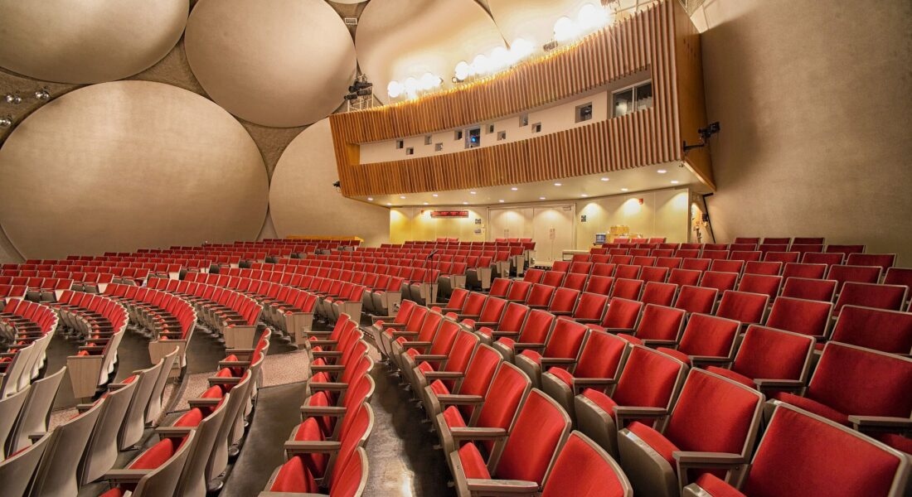
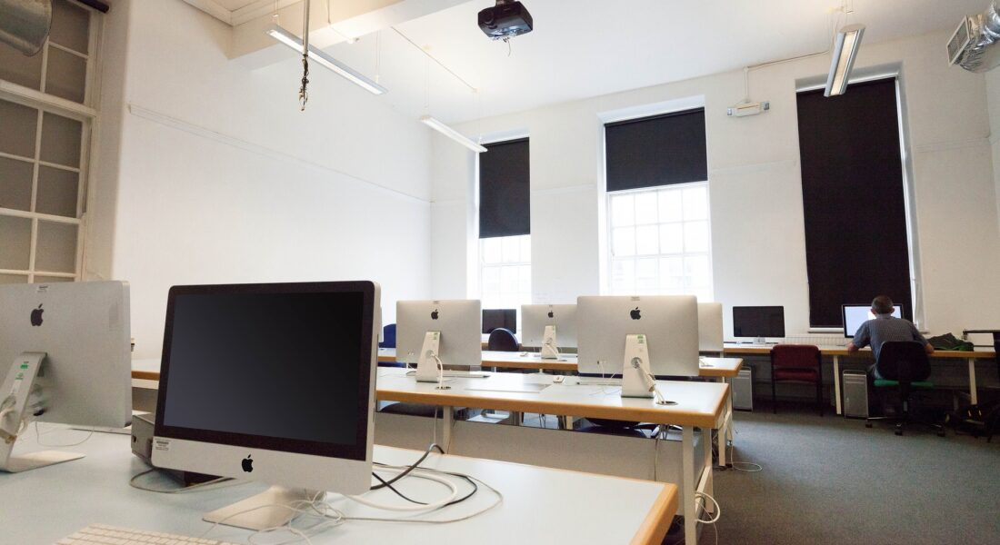
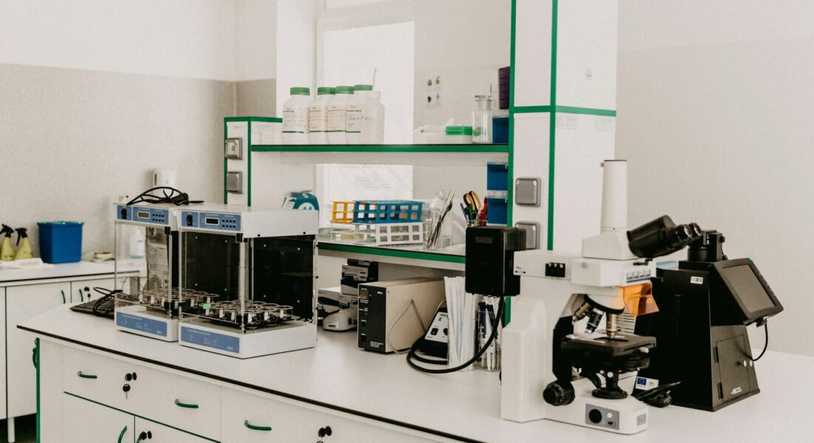

Tentang SMKN 1 SUSUKAN
- VISI:
- MEWUJUDKAN SEKOLAH MENENGAH KEJURUAN BERBASIS PERTANIAN, TEKNOLOGI DAN BISNIS YANG UNGGUL DALAM MENCIPTAKAN GENERASI MILENIAL YANG KREATIF, INOVATIF, DAN MANDIRI PADA TAHUN 2024.
- MISI:
- 1.MENGEMBANGKAN SUMBER DAYA SEKOLAH UNTUK MENDUKUNG PROGRAM MERDEKA BELAJAR.
- 2.MENDORONG TERCIPTANYA SEKOLAH RAMAH ANAK DAN RAMAH LINGKUNGAN.
- 3.MENUMBUHKAN KARAKTER UNGGUL UNTUK MENDORONG TERBENTUKNYA GENERASI YANG KUAT LAHIR BATIN, BERAKHLAK MULIA, KREATIF, INOVATIF, DAN MANDIRI.
- 4.MEMBANGUN JEJARING YANG LUAS MELALUI PROGRAM KERJA SAMA DENGAN DUNIA USAHA DAN DUNIA INDUSTRI
FASILITAS
|  |
|  |
|  |
- JURUSAN
- 1.TEKNIK KENDARAAN OTOMOTIF RINGAN
- 2.AKUNTANSI DAN KEUANGAN LEMBAGA
- 3.PENGOLAHAN HASIL PERTANIAN
- 4.TERNAK UNGGAS
- 5.TANAMAN PANGAN DAN HORTIKULTURA